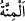

hususu reddetti. Sonra onun saydığı nimetlere döndü. Doğru olduğu ve dâvâsına zarar
vermediği için onları reddetmedi. Bilakis bunun aslında onun yaptıklarından
kaynaklanan bir felâket olduğuna dikkat çekti.
Bazıları demiştir ki: “Fir’avn bayağı kimselerin konuştuğu gibi söze başlamış ve
yedirip içirmesini Allah’ın peygamberinin başına kakmıştır.”
“ ağır/büyük nimet ve lütufta bulunmak, demektir. Bu iki şekilde söylenir:
Birincisi, bunun bilfiil olmasıdır. Birisi başkasına ağır/büyük iyilik ve lütufta bulunduğu
zaman bu kelime kullanılır. Şu âyet bu şekildedir: “Allah, müminlere büyük bir
lütufta bulunmuştur.” (Âl-i İmrân, 3/164) Hakîkatte bu sadece Allah Teâlâ’ya
mahsustur. İkincisi ise sözle olmasıdır. Bu ise insanlar arasında küfrân-ı nimet dışında
çirkin görülür. Onun çirkinliğinden dolayı “Minnet (başa kakma), yapılan ihsan ve
iyiliği yıkar.” denilmiştir. Küfrân-ı nimet karşısında minnette bulunmak güzel olduğu
için de “Nimete nankörlük edildiğinde minnette bulunmak, yâni yapılan iyilikleri
saymak güzel olur.” denilmiştir.
Muhammed b. Ali Tirmizî (k.s.) der ki: “İyilik yaptığın kimseye iyiliklerini
hatırlatmak ve tekrar tekrar söylemek fütüvvetten değildir. Görmez misin Fir’avn’un
fütüvveti olmadığı için yaptığı iyiliği nasıl zikretti ve Mûsâ (a.s.)’ın başına kaktı.”
Âlemdeki soysuzlardan ahde vefa bekleme
Papaz mizaçlılardan insanca bir davranış bekleme
Bilesin ki Allah Teâlâ Mûsâ (a.s.)’ı nebî ve rasul yapmakla lütuf sıfatının mazharı
kıldı. Onun bu mânâda kemaliyyeti/üstünlüğü vardır. O bu dereceye ancak ilâhi terbiye
ile ve Fir’avn’un karşısında risâletin zorluklarına göğüs germekle ulaşmıştır. Allah
Fir’avn’u da Mûsâ (a.s.)’ı yalanlayan ve ona karşı inatçılık eden bir kimse kılmak
sûretiyle kahr sıfatının mazharı kıldı. Fir’avn’un azgınlık, yüz çevirme ve
büyüklenmede İblis’in ulaşamadığı bir kemâliyyeti/üstünlüğü vardır. Bu, insanda kahr
sıfatını ızhar konusunda şeytanda bulunmayan istîdadın bulunduğunun bilinmesi içindir.
Çünkü şeytan Âdem’e inatla karşı çıkmış ve “Ben ondan daha üstünüm.” (el-A’râf,
7/12) demiştir. Fir’avn ise “Ben, sizin en yüce Rabbinizim!” (en-Nâziât, 79/24)
diyerek Allah’a inatla karşı çıkmıştır. Bu sır ile insanda lütuf sıfatını ızhar konusunda
melekte bulunmayan istîdâdın var olduğu bilinir. Bu yüzden insan meleğin
mescûdu/kendisine secde ettiği, melek ise insanın sâcidi/ona secde eden oldu. Eğer
Fir’avn Allah’ı yalanladığı halde Mûsâ (a.s.) onu Allah’a dâvet etmeseydi, Fir’avn
kahr sıfatının mazharı olmak üzere azgınlıkta kemâle ulaşamazdı. et-Te’vîlâtü’n-
Necmiyye’de böyle geçmektedir. Artık sen kıyamete kadar her asrın Mûsâ’sını ve her
Fir’avn’unu onlara kıyas et. Çünkü eşyâ zıtlarıyla ortaya çıkar/bilinir ve kemâle erer.